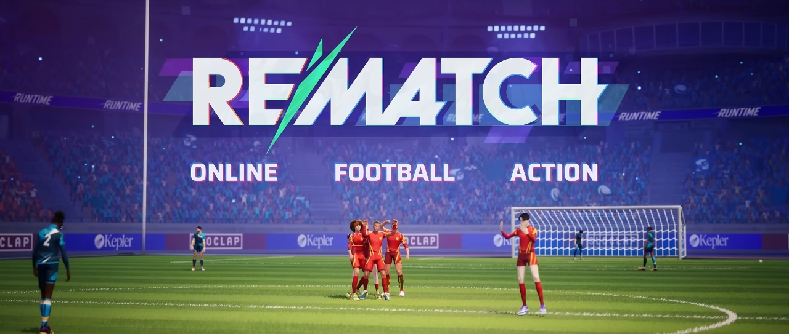

{kind=link}
{kind=link}
{kind=link}
{kind=link}
{kind=link}
{kind=link}
{kind=link}
{kind=link}
{kind=link}
{kind=link}
{kind=link}
{kind=link}
{kind=link}
{kind=link}
{kind=link}
{kind=link}
{kind=link}
{kind=link}
{kind=link}
{kind=link}
{kind=link}
{kind=link}
If they made a level design for bagels in the game and changed the progression a little, then it would be fine
Well, answer me! Who expected Rematch to be a new online fighting game?
Me! Me! It's me!)))
Or who hoped that it would be Absolver 2? (Even though it's a new brand, i.e. a full-fledged new name)
REMATCH will be an Online Football Action!
(They really decided to use the old name of Absolver) (￣ ‸ ￣ |||)
What do we know about this game?
According to the authors:
Rematch offers a fresh take on football with exciting third-person action, skill-based gameplay, and intense online competition.
- The game will be released a little later than my forecasts, namely in the summer of 2025, but a beta test will begin in the spring, which you can join here
- We will play as one character from the 3rd person
(who would doubt it)
- The main mode will be a 5v5 match, but faster modes 4v4 and 3v3 will also be available. Regarding other modes, if they are considered, it will be only after polishing the declared
- Matches take place in a closed arena, which allows the ball to ricochet off the walls and ceiling.
- Just like in Absolver, an offline mode with training and free play will be available (most likely the training will be something like meditation in abz/sifu, and free play will be matches with NPCs without rating)
- Speaking about the rating, they didn’t tell us anything, but on the site there is a demonstration of the experience bar and divisions , so perhaps there will be fewer problems with selecting players like in absolver.
- There will be an opportunity to customize the character.
(It will even be possible to choose team colors there , but I’m not sure how exactly this will work, like why can only a guild participate in matches? Or are they all multi-colored? Or the colors of one player? Or your colors, but only for you, and then what about opponents?..)
- At the same time, it seems that the game will not have any abilities to choose from like in Absolver
- As for seasonal content
(Yes, there will be that too)
, it is still known that there will be cosmetics - The game will not have some ENles from regular football, to increase the dynamics of the game
- Well, there won’t be an open world in any form
(+ more additional answers for previous points)
- They also promised us that the game would have an observer mode , but we remember Absolver very well )))
- Also cross-play ...
well, you get the idea))
You can see screenshots with answers by clicking on the links in the text
Do you smell what it smells like? Rocket League! What is innovation, you ask? Well... Rematch will be paid, and donation seems to be the same... Although the developers themselves are not yet sure how exactly monetization will be implemented , but I hope that it will be the same as in Absolver!
and yes, I was also amused by how they decided to justify the monetization system - it is premium WWWW
Well, okay, now let's talk about what I was able to dig up on the DS server about mechanics that differ from Rocket League:
- The game will have better ball control, as you can see from the trailer you will have skills for catching, intercepting and protecting the ball
- But also, if you look closely, you can see the “ sight ”. Or rather a circle with a dot, most likely the mechanics work as follows: When you press the “attack” button, during the animation you can rotate the stick to change the direction of the ball
- Most likely, it was because of these mechanics that SloClap had difficulty adapting the game to keyboard and mouse
- Also, despite the fact that there are no classes in the game, the first one who approaches the goal will become a goalkeeper , and his mechanics will be slightly different
Also, I have long had an assumption that if SloClap releases a new game with online, then most likely they will turn off the Absolver servers or transfer them to a new project. The community manager, of course, said that he had not heard anything about this , but still one cannot be sure that they will not close the servers for one reason or another... I really hope that Absolver will live!))
Okay, what's the bottom line?
SloClap made an extremely dubious decision, ignoring their established audience. Those who are interested in martial arts. Moreover, considering that when looking for new employees, they directly said that they were looking for those who were interested in martial arts just like them. However, I have an idea why they decided to make a T-shirt.
And first, let's take a look at their games in general
- Absolver is a game with extremely interesting game design, but terrible execution. Because at the start there were huge problems with servers, bugs, optimization. In addition to this, a new, previously unheard-of combat system was created, which not everyone liked. Besides, I don’t know how it is in the West, but in ENssia, the game was often compared to Dark Souls, which did not go well. Because, yes, the game has many different elements from soulslices, but there are too few of them to call the game a Dark Souls from the world of fighting games! As a result, the game is half dead.
-
Sifu - forgive the Sifuists, but from the point of view of game design - this is simply a revised and simplified concept of Absolver. Those. if Para. is a Fighting game with bitmap controls and soulslick elements, then Sifu is a Bitemap with fighting game controls, bitmap level design and bagel elements. At the same time, there are too few elements of a bagel to be a good bagel , and at the same time too many to be a good, albeit small, bitmap .
However, something doesn’t add up here; if the game is weak, then why is it so popular? It's simple, the players were sold a Hong Kong action movie under the guise of a game. All these references and the staging of the battle made a good advertisement for the game, and they help close your eyes, not a problem.
It’s the progression and death system, as well as the complexity* that stifles the game
*Здесь имеется в виду сложность из определения Келина - высокая вероятность совершения ошибки и высокая цена этой ошибки.
And I have a suspicion that SloClap, seeing how unsuccessful Sifu was sold from a game design point of view, thought that they could sell Fifu in the same way. Plus, remembering the previous news, where I suggested that SloClap registered the name of the game in France in order to receive funding from the government, it can also be confirmed by the fact that it will be much easier to sell a t-shirt to the fund than a fighting game, etc. Especially after the recent Olympic Games in Paris, there is literally PR on two fronts.
And yes, I found that as of 2021, the Fund for Assistance to Video Games (FAJV) began to be managed by CNC - National. center of cinema and animation in France. Source
Also, when I read the answers to questions from PyaKura, it seemed to me that not all 100+ people worked on the project. And considering that the size of the game is approximately the same as Abz at release, I hope that 45 people were involved in Rematch. And this will be just a small project in order to quickly get money in order to continue the parallel development of the main game.
HOWEVER, THESE TWO ASSUMPTIONS ARE JUST ASSUMPTIONS! DO NOT TAKE THEM SERIOUSLY!!!Well, it's not all bad! Just look at the memes I was able to make in just 5 hours!
{kind=link}
{kind=link}
{kind=link}
{kind=link}
Personally, I'll watch the game and if it's good, maybe I'll play it sometimes. And there are no translations of news or videos! I'm already sick of Sifu.
And yes, during the month during which I dealt with this news, a post came out from the developers on mechanics , as well as an interview on the game. There should be links to the ENssian translation, but since this is a translation of the news into English, I will leave links to the original)))